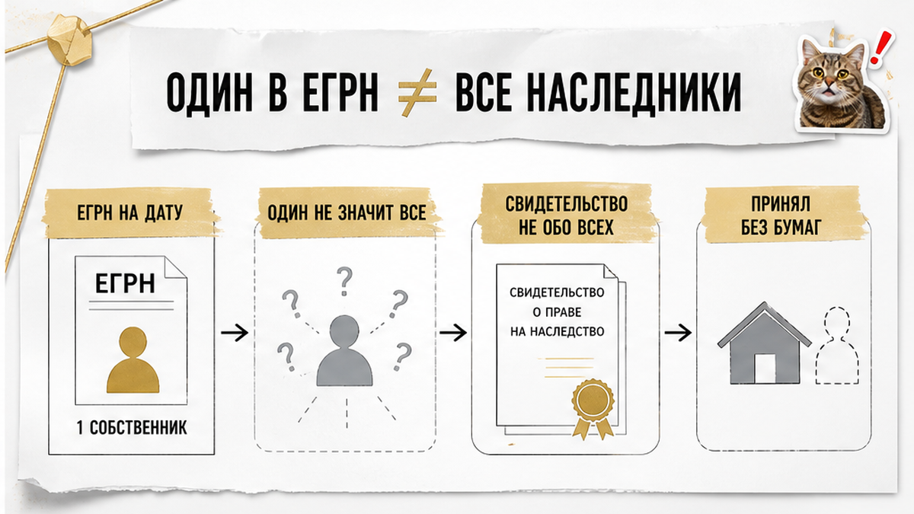
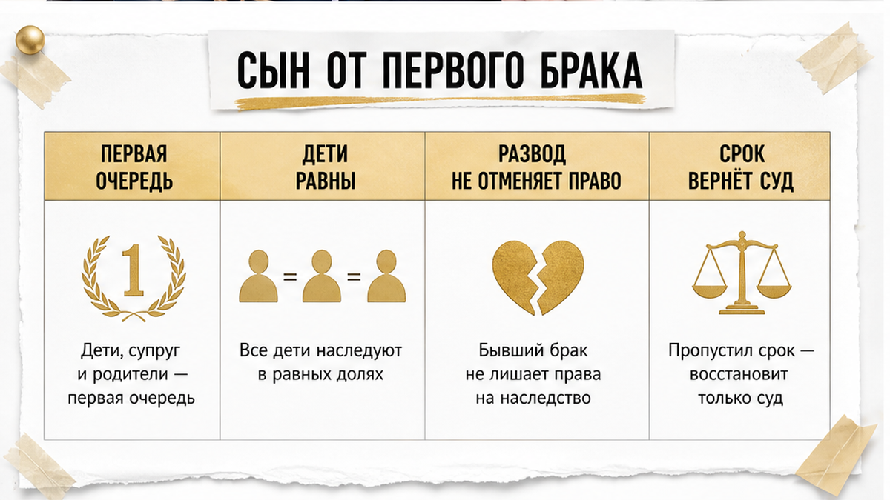
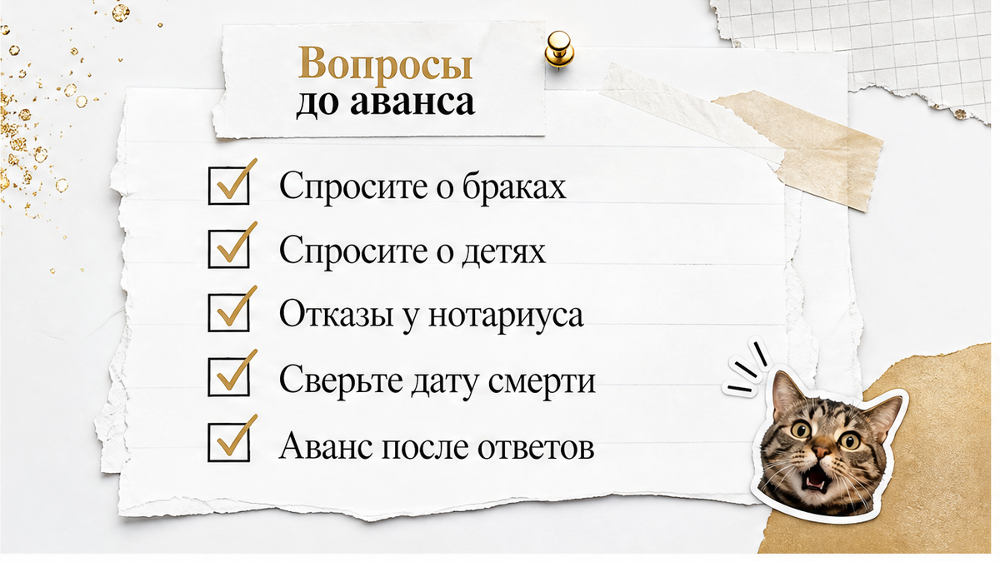

Квартира выглядела нормально.
Один продавец. Один собственник в выписке ЕГРН. Свидетельство о праве на наследство на руках. Документы, как говорят на просмотре, «в порядке».
Потом всплыла деталь. У наследодателя есть сын от первого брака. Нотариального отказа он не писал. Где он сейчас — продавцы толком не знают.
Смерть отца — примерно два года назад. Предложение покупателю прозвучало по-домашнему: «Давайте оформим так, а с отказом потом разберёмся».
Покупатель отказался. И, на мой взгляд, сделал единственно верную вещь.
Обычный человек в такой квартире видит одного собственника и чистую выписку. Риэлтор в этот момент спрашивает другое: кто ещё был в этой семье.
Разбираю спокойно и по порядку. Что реально видно в документах на наследственную квартиру. Чего в них не видно вообще. И какие вопросы задают до аванса, а не после.
Коротко: что нужно понять про наследство и сделку
Если читать всё некогда — вот суть.
Практический вывод один. До аванса вы выясняете не только кто продаёт, но и кто мог наследовать.
Святослав Шакин, The Риэлтор, Тюмень. Наследственные квартиры смотрю не с фразы «документы в порядке», а с вопроса «кто ещё был в семье».
Полный разбор кейсов и как я это ловлю до аванса — в Telegram и MAX.

Выписка ЕГРН отвечает ровно на один вопрос: кто числится правообладателем сейчас.
Это срез на дату запроса. Фотография, а не биография.
В ней нет семейной истории. Нет прежних браков наследодателя. Нет его детей от других отношений. И уж точно нет строки «круг наследников проверен, других нет».
Поэтому «в ЕГРН один собственник» — это вообще не про наследников. Это про то, что оформился один человек.
Свидетельство о праве на наследство устроено похоже. Нотариус выдаёт его тем, кто пришёл и заявил о правах. Документ подтверждает права оформившихся наследников. Отчётом о проверке всех возможных он не является.
Дальше — момент, который на рынке путают чаще всего.
Наследство принимают не только заявлением у нотариуса. Человек живёт в квартире, платит коммуналку, делает ремонт, распоряжается вещами отца — это поведение принявшего наследника. Фактическое принятие.
Значит, отсутствие свидетельства у человека не означает отсутствия у него права. Это две разные вещи.
Ситуация «продавец один, а правообладателей больше, чем показали» — не только про наследство. Я уже разбирал случай, где на встречу приехал один человек, а квартиру продавали четверо.
Логика проверки та же. Считать не тех, кто пришёл на сделку, а тех, у кого есть права.

Первая очередь по закону — дети, супруг и родители наследодателя (ст. 1142 ГК РФ). Дети от предыдущих браков входят в неё наравне с остальными.
Развод родителей на это не влияет. Другой город — не влияет. Пятнадцать лет без единого звонка — тоже не влияет.
Право наследника зависит от родства, а не от качества отношений в семье.
Теперь — почему такого наследника «не видно» в документах. Причин три, и все скучные.
Первая. Нотариус работает с тем, что ему представили и заявили. Разыскивать по стране всех потенциальных наследников и восстанавливать биографию наследодателя он не обязан.
Вторая. В ЕГРН, как я уже сказал, семейной истории нет в принципе.
Третья. Продавец может говорить абсолютно искренне.
«А он же сказал, что претендовать не будет».
Сказал. Когда-то. По телефону. Для продавца вопрос закрыт. Юридически — открыт.
И вот отсюда растёт риск покупателя. Если такой наследник объявится и восстановит срок принятия наследства через суд (ст. 1155 ГК РФ), спор пойдёт вокруг квартиры, которая уже продана и уже ваша.
Статус добросовестного приобретателя (ст. 302 ГК РФ) — серьёзная защита. Но это позиция в суде, а не гарантия, что суда не будет.
Хуже всего, когда деньги ушли раньше, чем документы стали понятными. Про такой порядок действий у меня есть отдельный разбор — когда расписку написали, а проверку сделали задним числом.
В наследственной сделке порядок обратный. Сначала разбираемся с кругом наследников. Потом обсуждаем аванс.
Отказ от наследства — это не настроение и не семейная договорённость на кухне.
Это нотариальная односторонняя сделка. Статья 1157 ГК РФ: отказ оформляется у нотариуса.
Либо бумага есть, либо отказа нет. Третьего варианта не существует.
Что я слышу от продавцов чаще всего:
Ни одна из этих фраз ничего не значит для сделки.
Это информация о семейных отношениях. Не документ.
Обычный покупатель слышит «он не будет претендовать» и успокаивается: человек же сказал. Я в этот момент спрашиваю другое — «у какого нотариуса и когда он это сказал».
Дальше — момент, который путают почти все.
Отказ и непринятие наследства — разные вещи.
Человек, который не пошёл к нотариусу, не отказался. Он просто не оформил.
Его право при этом никуда не делось. Срок можно восстановить. Согласие остальных наследников можно получить. Свидетельства можно переоформить.
И третье, о чём вспоминают в последнюю очередь. Наследство принимают не только заявлением.
Есть фактическое принятие: человек живёт в квартире, платит коммуналку, делает ремонт, распоряжается вещами наследодателя.
Отсутствие свидетельства у наследника не означает отсутствия у него права. Запомните эту строчку, она стоит дороже любого торга.
Поэтому вопрос «есть письменный отказ у нотариуса?» — не придирка и не недоверие к людям.
Это единственный вопрос, на который бывает нормальный ответ. Да, вот документ. Или нет, документа нет.
А если вместо ответа вы слышите «покупайте так, срок горит, потом всё решим» — вы уже видите модель поведения.
Она мне знакома по другой истории, где вместо ответов предлагали скидку два миллиона и срочность.
Скидка была настоящей. Причина скидки — тоже.
В разговорах про наследственные квартиры сроки валят в одну кучу.
«Прошло два года — уже нормально». «Три года — и вообще безопасно».
Это разные сроки из разных законов. Они отвечают на разные вопросы.
| Срок | Откуда берётся | Что означает на практике | Чего не означает |
|---|---|---|---|
| 6 месяцев | ст. 1154 ГК РФ | Стандартное время принятия наследства со дня смерти наследодателя | Что после него круг наследников закрыт навсегда |
| 2 года (как в кейсе) | Фактическая дата смерти | Наследство оформлено, но ненайденный наследник ещё в поле зрения | Что все наследники отсеялись сами собой |
| 3 года | Минимальный срок владения для НДФЛ (правила ФНС) | Налоговый вопрос продавца: считается со дня смерти наследодателя | Что риск спора о праве исчез |
| 3 года | Общая исковая давность, ст. 196 ГК РФ | Общий ориентир по давности требований | Что «ровно через три года» спор невозможен |
Отдельно — статья 1155 ГК РФ.
Пропущенный срок принятия наследства не приговор. Наследник может восстановить его через суд, если причины уважительные.
Есть и внесудебный путь: письменное согласие всех, кто наследство уже принял.
И тогда ранее выданные свидетельства аннулируются, а доли пересчитываются. Включая долю в той квартире, которую вы к тому времени купили.
Именно поэтому я не работаю с логикой «прошло два года, значит тишина».
Тишина в документах и тишина в жизни — не одно и то же.
Практический вывод для покупателя. По наследственному имуществу первая дата, которую вы выясняете, — дата смерти наследодателя. Не дата записи в Росреестре.
Запись может появиться позже на месяцы. Отсчёт всех сроков идёт от смерти.
Обычный покупатель смотрит на выписку и видит «право зарегистрировано в прошлом году». Я смотрю на основание права и спрашиваю: а умер он когда?
И ещё. Сроки — не повод торопиться с деньгами.
Аванс или задаток до выяснения обстоятельств — это способ оплатить чужую неопределённость.
У меня была история, где покупатели почти внесли задаток за 48 часов до торгов, а квартиру к тому моменту уже подарили дочери.
Дата решала всё. Как и здесь.
Есть открытый сервис Федеральной нотариальной палаты — реестр наследственных дел, reestr-nasled.ru.
Поиск идёт по наследодателю: ФИО, дата рождения, дата смерти.
Что он даёт: подтверждение, что наследственное дело открыто, и у какого нотариуса.
Это полезно. Особенно когда продавец путается в датах или не помнит, где оформлялось наследство.
Чего он не даёт:
ЕГРН тоже не про это. Выписка показывает текущих правообладателей и обременения. Семейную историю она не хранит.
Свидетельство о праве на наследство показывает тех наследников, кто оформился. И только их.
Отдельно про нотариуса, потому что на него ссылаются как на щит.
Нотариус работает с документами и заявлениями, которые ему представили. Он не обязан разыскивать всех возможных наследников по стране.
Поэтому нотариальная форма сделки не отменяет проверку цепочки перед покупкой. Она решает другие задачи.
И про статью 302 ГК РФ. Статус добросовестного приобретателя существует — это важная защита.
Но это не страховка от любого спора. Это позиция в суде, до которого лучше не доводить.
Вывод по разделу: реестр наследственных дел — один из шагов, а не проверка. Он отвечает на вопрос «где дело», а не на вопрос «кто ещё наследовал».
Свежий случай коллеги. Объект простой, вопрос в нём взрослый.
Квартиру когда-то приватизировали. Потом умер отец. Его доля ушла по наследству, наследник оформил свидетельство, запись в реестре появилась.
На вид — обычная вторичка. Один собственник, бумаги на руках, никто ничего не скрывает.
Потом выясняется деталь. У умершего есть сын от первого брака. Нотариального отказа он не писал.
Где он сейчас — продавцы толком не знают. Сын на службе.
Здесь я фиксирую только факт, без выводов сверх него. Человек мог просто не успеть дойти до нотариуса в отведённые шесть месяцев. Житейское обстоятельство, из которого потом вырастает юридический вопрос.
А юридически всё скучно и понятно.
Дети наследодателя — первая очередь, статья 1142 ГК РФ. Сын от первого брака в ней ничем не отличается от детей от второго.
Отказ — нотариальное действие, статья 1157 ГК РФ. Не разговор, не обещание, не «он сам сказал».
Пропущенный срок — статья 1155 ГК РФ. Его восстанавливает суд при уважительных причинах. Или снимают внесудебно: письменным согласием всех, кто наследство уже принял. Тогда выданные раньше свидетельства аннулируются, доли пересчитываются.
Смерть была примерно два года назад. То есть наследство свежее, а история семьи закрыта не документом, а словом.
Что предложили покупателю?
Купить как есть. Без отказа. «Мы всё знаем, он не появится, зачем усложнять».
Покупатель отказался. На мой взгляд — правильно.
Он не отказался от квартиры навсегда. Он отказался платить аванс раньше, чем круг наследников стал понятен по бумагам.
Отдельно про деньги, чтобы не было легенд. Платный отчёт по такому адресу у меня стоил 2900 рублей. Это цена моей коммерческой проверки конкретного объекта, а не государственный тариф и не универсальный прайс на любую наследственную квартиру.
Смысл цифры в другом. Стоимость вопросов и стоимость спора о доле — величины из разных вселенных.

Наследственную квартиру проверяют не после торга. До денег.
Как только аванс внесён, разговор меняется. Вы уже сторона, которая боится потерять сумму, и вопросы начинают звучать тише.
Обычный покупатель спрашивает: «Кто продаёт?»
Я спрашиваю: «Кто мог наследовать?»
Три вопроса задаю прямо и вслух.
Первый: сколько было браков у наследодателя? Не «был ли женат», а сколько раз и когда. ЕГРН эту историю не хранит — он показывает правообладателей, а не биографию семьи.
Второй: есть ли дети от предыдущих отношений? Не только от брака. Дети вне брака наследуют так же.
Третий: есть ли письменные отказы у нотариуса и от кого именно? Не «все согласны», а конкретно: кто пришёл, что подписал, у какого нотариуса.
Дальше — три проверки, которые делаются до аванса.
Аванс до ответов — самая дорогая экономия времени на рынке.
Я видел, как сделку разгоняют скоростью и фразой «завтра торги». В одной такой истории задаток почти внесли за двое суток до торгов, а квартиру к тому моменту уже подарили дочери. Логика одна и та же: срочность подменяет проверку.
И ещё одно ограничение, о котором просят забыть чаще всего.
Нотариальная форма сделки не отменяет проверку цепочки. Нотариус работает с тем, что ему представили, и не обязан разыскивать по стране всех возможных наследников.
Статья 302 ГК РФ про добросовестного приобретателя — не страховка от спора. Это основание защищаться в суде, до которого лучше не доходить. Разница принципиальная.
Коротко и по делу. Если основание права — наследство, а со дня смерти прошло меньше трёх лет, я иду по этому списку.
В Тюмени такие объекты — не экзотика. Приватизация девяностых, доли, смерть собственника, наследники в разных регионах.
Низкая цена и быстрая сделка проверку не заменяют. Они её только удорожают — потом.
Если у вас на руках такая квартира и один собственник в выписке — напишите, разберём круг наследников по документам, а не по обещаниям.
И последнее, что стоит сказать честно.
Отказ от покупки — тоже результат. Покупатель из кейса не потерял квартиру. Он не потерял деньги в споре о доле.
Иногда лучшая сделка — та, которую вы не совершили сейчас, чтобы спокойно совершить другую через месяц.
Нужна консультация или сопровождение сделки? Разберу наследственную квартиру до аванса: дата смерти, круг наследников, отказы, наследственное дело — и скажу прямо, идти в сделку или искать другой объект. Если решение принято — веду сделку до регистрации.
Святослав Шакин, The Риэлтор, Тюмень. Телефон: +7 922 001 65 05
Связь: Telegram · MAX · сайт · Дзен · VK
Полезное: гайды по сделкам · обо мне и как я работаю
Материал проверен: Святослав Шакин, личный риэлтор в Тюмени. Ориентир для покупателя, не индивидуальная юридическая консультация.